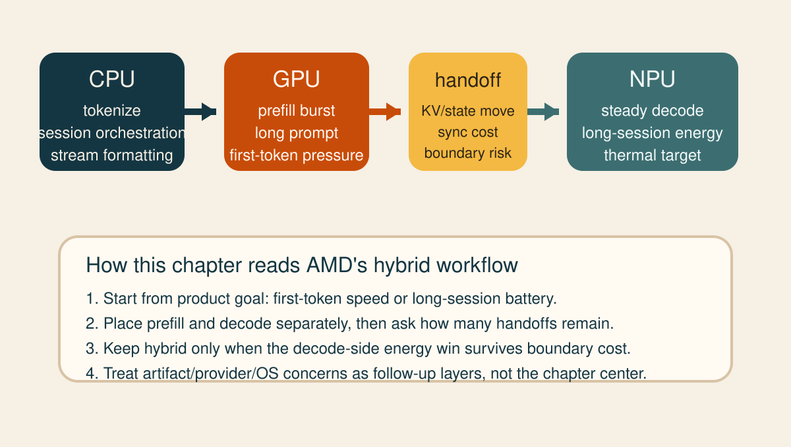
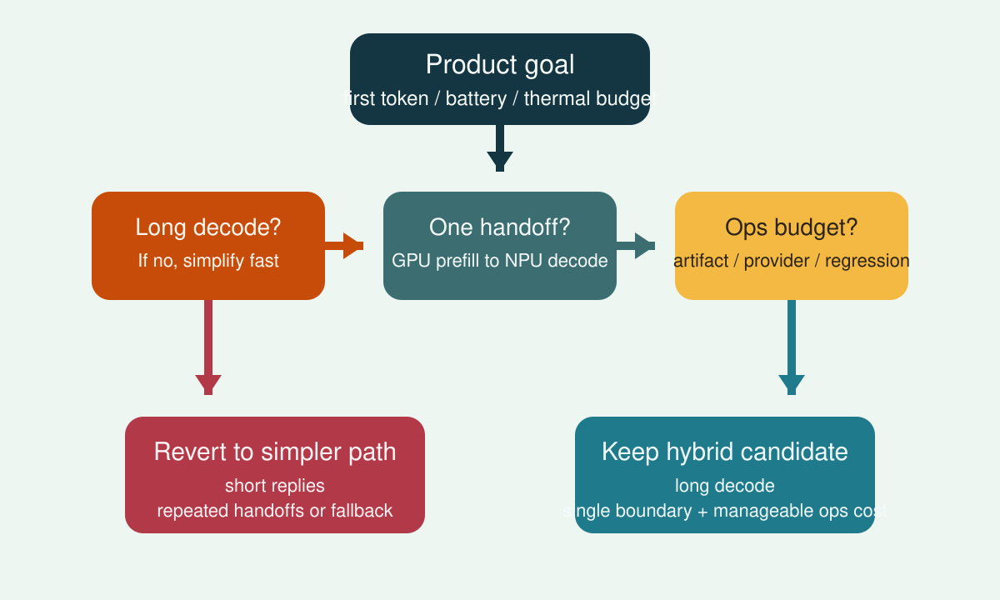

Ryzen AI OGA
수업 개요
AMD Ryzen AI 문서는 이 주제를 아예 Hybrid On-Device GenAI workflow라고 부른다 [S1]. 이 챕터의 중심 질문도 같다. "CPU, GPU, NPU를 모두 쓸 수 있을 때 어느 단계를 어디에 두는가?"다. 여기서 Ryzen AI OGA는 단일 장치 최대 활용법이 아니라, 단계별 역할 분담과 handoff 지점을 설계하는 제품 문제로 읽는 편이 정확하다 [S1].
[합성] 따라서 이 장의 tradeoff는 단순 속도가 아니라 전력 효율을 얻기 위해 얼마만큼의 handoff와 운영 복잡도를 감수할 것인가다. Qualcomm AI Hub [S2], ONNX Runtime QNN EP [S3], Windows ML [S4]은 이 AMD 중심 설명을 보조하는 인접 비교 축으로만 사용한다.
학습 목표
- AMD가 왜
hybrid workflow를 전면에 두는지 설명할 수 있다. - CPU orchestration, GPU prefill, NPU decode 같은 split 후보를 제품 목표와 연결해 설명할 수 있다.
- handoff 횟수, first-token 목표, 긴 세션 전력 목표를 함께 보고 split 유지 여부를 판단할 수 있다.
- Qualcomm AI Hub, QNN EP, Windows ML을 AMD hybrid 설계 뒤의 비교 축으로 정리할 수 있다.
수업 전에 생각할 질문
- 첫 토큰이 중요한 앱과 장시간 배터리가 중요한 앱은 같은 장치 분할을 써야 할까?
- NPU 사용 비율이 높아졌는데도 제품 체감이 나빠질 수 있는 이유는 무엇일까?
- CPU, GPU, NPU를 모두 쓰는 설계에서 가장 먼저 계측해야 할 비용은 연산량일까, handoff일까?
강의 스크립트
1. AMD 문서가 먼저 묻는 것은 "누가 얼마나 오래 일하는가"다
교수자: Ryzen AI OGA를 읽을 때 첫 문장은 "NPU를 얼마나 많이 쓰는가"가 아닙니다. AMD 문서 제목 자체가 Hybrid On-Device GenAI workflow입니다 [S1].
학습자: 그러면 장치 이름보다 workflow가 먼저라는 뜻인가요?
교수자: 맞습니다. AMD는 CPU, GPU, NPU가 함께 일하는 on-device GenAI 흐름을 먼저 놓고 이야기합니다 [S1]. [합성] 그래서 수업도 "모델 전체를 한 장치에 고정할까?"보다 "prefill, decode, orchestration을 어디에 둘까?"를 먼저 묻습니다.
학습자: Ryzen AI OGA에서 각 장치는 보통 어떤 역할 후보로 보나요?
교수자: AMD 문서가 hybrid 구성을 전면에 둔다는 사실을 출발점으로 삼으면, CPU는 토크나이징과 세션 orchestration, GPU는 긴 prompt를 빨리 밀어 넣는 prefill, NPU는 반복 decode처럼 전력 효율을 노리고 싶은 구간의 후보로 읽는 것이 자연스럽습니다 [S1]. [합성] 이 역할 배치는 문서의 구현 세부를 그대로 옮긴 공식이 아니라, AMD의 hybrid framing을 제품 회의용으로 단순화한 학습용 역할 지도입니다 [합성] [S1].
flowchart LR
U["사용자 요청"] --> C["CPU\n토크나이징\n세션 orchestration"]
C --> G["GPU\nprefill\n초기 burst 계산"]
G --> H["handoff\nKV/state 전달\n동기화"]
H --> N["NPU\ndecode 후보\n반복 생성"]
N --> R["CPU\n스트리밍/후처리"]식 1. split 유지 여부를 보는 학습용 식
AMD 문서가 hybrid workflow를 강조한다는 사실을 바탕으로, 이 장은 split 유지 여부를 handoff까지 포함해 읽는 학습용 식을 쓴다 [합성] [S1].
[합성] G_split > 0이면 장치 분할이 남기는 계산상 이득이 handoff 비용보다 크고, G_split <= 0이면 hybrid가 오히려 제품 체감을 망친다 [합성] [S1].
학습자: 결국 hybrid의 핵심은 어디서 넘기느냐군요.
교수자: 그렇습니다. AMD 문서가 hybrid를 먼저 말한다는 것은, 장치를 섞는 순간 handoff를 피할 수 없다는 뜻이기도 합니다 [S1]. [합성] 그래서 Ryzen AI OGA 회의에서는 NPU 사용률보다 GPU -> NPU handoff가 한 번인지, decode 중 반복되는지를 먼저 적는 편이 더 실용적입니다.
2. 전력 효율은 긴 decode에서만 공짜처럼 보인다
학습자: 배터리 목표가 강하면 decode를 NPU에 두는 쪽이 자연스럽지 않나요?
교수자: 그 가설은 AMD 문서의 hybrid framing과 잘 맞습니다 [S1]. [합성] 긴 세션에서 반복 decode가 계속 이어지면 NPU 쪽 전력 이점을 노릴 여지가 커집니다. 반대로 답변이 짧고 handoff가 자주 생기면 NPU로 넘기는 순간의 동기화와 상태 이동이 체감 이득을 지워 버릴 수 있습니다 [합성] [S1].
학습자: 그러면 첫 토큰이 중요한 앱은 다르게 봐야겠네요.
교수자: 맞습니다. [합성] 첫 토큰이 더 중요하면 GPU prefill이 우선 후보가 되고, 장시간 세션 에너지와 발열이 더 중요하면 NPU decode가 우선 후보가 됩니다. 같은 Ryzen AI OGA라도 제품 목표가 다르면 split의 정답도 달라집니다 [합성] [S1].
flowchart TD
A["제품 목표 확인\n첫 토큰 / 배터리 / 발열"] --> B{"긴 decode가 많은가?"}
B -->|예| C["NPU decode 후보 강화"]
B -->|아니오| D["단일 GPU 또는 단순 split 검토"]
C --> E{"handoff가 한 번으로 끝나는가?"}
E -->|예| F["hybrid 유지 가능성 높음"]
E -->|아니오| G["harmony 깨짐\n단일 경로 재검토"]3. 왜 전력 이득이 운영 복잡도로 되돌아오는가
학습자: 배터리 이득이 보이면 그대로 hybrid로 가면 되는 것 아닌가요?
교수자: 그렇지 않습니다. AMD가 hybrid workflow를 말할 때 제품 팀은 장치 분할뿐 아니라 준비와 검증도 함께 늘어난다고 이해해야 합니다 [S1]. Qualcomm AI Hub는 compile/deploy 준비 흐름을 별도 문서로 설명하고 [S2], QNN EP는 provider와 backend 경계를 별도 문서로 설명하며 [S3], Windows ML은 OS 통합 표면을 따로 설명합니다 [S4]. 즉 hybrid를 실제 제품으로 가져가면 artifact 준비, provider 해석, fallback 시험, OS 수준 배포 차이를 함께 떠안게 됩니다.
식 2. 운영 복잡도를 같이 보는 학습용 비용식
아래 식 역시 AMD hybrid framing에 인접 문서의 준비/실행/배포 계층을 겹쳐 읽기 위한 학습용 비용식이다 [합성] [S1][S2][S3][S4].
[합성] C_artifact는 장치별 준비 산출물과 배포 경로 관리, C_provider debug는 runtime 경계 해석, C_fallback test는 미지원 구간과 탈출 경로 확인, C_regression은 릴리스 이후 재검증 비용을 뜻한다 [합성] [S1][S2][S3][S4].
학습자: 그럼 좋은 split은 E_token만 낮은 split이 아니라 C_ops까지 감당 가능한 split이겠네요.
교수자: 정확합니다. [합성] Ryzen AI OGA에서 장시간 배터리 이득이 조금 보이더라도 handoff 디버깅과 회귀 비용이 폭증하면 첫 릴리스는 단일 GPU가 더 현실적일 수 있습니다. 반대로 같은 모델을 오래 유지하고 긴 세션 비중이 높은 제품은 hybrid가 더 설득력 있어질 수 있습니다.
4. handoff가 이득이 되는 경우와 손해가 되는 경우
교수자: 이제 split 후보를 상황별로 적어 봅시다.
split이 유리한 경우: prompt가 길고, decode가 충분히 길며, 배터리/발열 목표가 분명하고, GPU -> NPU handoff가 한 번으로 끝나는 경우 [합성] [S1]split이 애매한 경우: 첫 토큰이 매우 중요하지만 세션 길이는 짧은 경우. prefill 가속은 필요하지만 NPU decode 구간이 짧아 이득이 희미해진다 [합성] [S1]split이 불리한 경우: 짧은 Q&A가 반복되고, 장치 전환이 여러 번 생기며, fallback이 자주 발생하는 경우 [합성] [S1][S3]
학습자: 결국 CPU/GPU/NPU를 모두 쓴다고 해서 항상 현대적인 설계가 되는 건 아니군요.
교수자: 맞습니다. AMD 문서가 hybrid를 말하는 이유는 "반드시 섞어라"가 아니라 "실제 제품은 섞을 가능성이 높으니 설계 기준을 먼저 세워라"에 가깝습니다 [S1].
자주 헷갈리는 포인트
hybrid = NPU 사용 시간을 최대화하는 것은 오해다. AMD가 먼저 강조하는 것은 hybrid workflow 자체이며, split 지점 설계가 핵심이다 [S1].GPU prefill -> NPU decode는 AMD 문서의 고정 공식이 아니라, hybrid framing을 제품 목표와 연결하기 위한 학습용 split 후보다 [합성] [S1].- battery 목표가 있으면 항상 hybrid가 이긴다고 생각하기 쉽다. 짧은 세션과 잦은 handoff에서는 단일 GPU가 더 나은 체감을 만들 수 있다 [합성] [S1].
- artifact 준비 [S2], provider 경계 [S3], OS 통합 [S4]은 AMD 설명을 대체하는 주제들이 아니라, AMD hybrid 설계를 실무로 옮길 때 붙는 인접 계층이다.
사례로 다시 보기
사례 A. 오프라인 영상 자막 초안 생성기
- 제품 목표: 긴 영상 구간을 넣었을 때 첫 초안이 빠르게 떠야 한다.
- 첫 후보:
GPU prefill -> NPU decode[합성] [S1] - 이유: 긴 입력 구간의 초기 계산은 GPU가 유리할 수 있고, 이후 긴 decode 구간은 NPU 전력 이점을 노릴 수 있다 [합성] [S1]
- 실패 신호: 결과가 짧게 끝나거나 구간 전환마다 handoff가 반복되면
T_handoff가 이득을 잠식한다 [합성] [S1]
사례 B. 배터리 우선 개인 코파일럿
- 제품 목표: 장시간 세션에서 발열과 배터리 소모를 낮추는 것.
- 첫 후보: CPU orchestration + NPU 중심 decode [합성] [S1]
- 이유: 긴 세션에서는 반복 decode의 누적 에너지 비용이 커지므로 NPU 구간을 길게 가져가는 설계가 의미를 가질 수 있다 [합성] [S1]
- 실패 신호: artifact 관리 [S2], provider 해석 [S3], 회귀 검증 [S4]이 감당되지 않으면 첫 릴리스는 단일 GPU 경로가 더 현실적일 수 있다 [합성]
핵심 정리
- Ryzen AI OGA의 출발점은
어느 칩이 제일 빠른가가 아니라Hybrid On-Device GenAI workflow라는 설계 질문이다 [S1]. - CPU orchestration, GPU prefill, NPU decode는 AMD hybrid framing을 제품 회의용으로 단순화한 학습용 역할 지도다 [합성] [S1].
- hybrid의 성패는 전력 효율만이 아니라 handoff 비용과 운영 복잡도를 함께 봐야 결정된다 [합성] [S1][S2][S3][S4].
- Qualcomm AI Hub, QNN EP, Windows ML은 AMD 설명의 대체재가 아니라 artifact 준비, provider 경계, OS 통합을 보조로 비교하는 축이다 [S2][S3][S4].
복습 체크리스트
- AMD 문서가 왜
hybrid workflow라는 표현을 먼저 쓰는지 설명할 수 있는가? [S1] - 첫 토큰 목표와 장시간 배터리 목표가 split 후보를 어떻게 바꾸는지 말할 수 있는가? [합성] [S1]
G_split관점에서 handoff가 hybrid 이득을 지우는 조건을 설명할 수 있는가? [합성] [S1]C_ops관점에서 artifact 준비, provider debug, fallback test, regression을 구분할 수 있는가? [합성] [S1][S2][S3][S4]- Ryzen AI OGA 설명과 Qualcomm/QNN/Windows ML 비교를 주종 관계로 정리할 수 있는가? [S2][S3][S4]
대안과 비교
| 관점 | 먼저 보는 것 | 이 챕터에서의 위치 | | --- | --- | --- | | Ryzen AI OGA [S1] | hybrid on-device workflow와 장치 역할 분담 | 본문 중심 | | Qualcomm AI Hub [S2] | compile/deploy 준비 경로 | artifact 준비 계층 비교 | | ONNX Runtime QNN EP [S3] | provider와 backend 경계 | fallback/debug 계층 비교 |
| Windows ML [S4] | OS 차원의 on-device runtime 표면 | 제품 배포 계층 비교 |
|---|
교수자: 여기서 비교의 목적은 "누가 더 우월한가"가 아닙니다. AMD hybrid 설계를 실제 제품화할 때 어떤 종류의 준비와 디버깅이 추가되는지 층위를 나눠 보는 것입니다.
참고 이미지
참고 이미지 1. AMD hybrid OGA 단계 배치 요약

- 캡션: AMD가 hybrid workflow를 전면에 두는 이유를 제품 단계 배치로 다시 그린 요약도다. CPU orchestration, GPU prefill, NPU decode 후보와 handoff 지점을 한 화면에 모았다 [합성] [S1].
- 출처 번호: [S1]
- 왜 이 그림이 필요한가: 이 챕터의 핵심이
장치 이름이 아니라단계 배치라는 점을 바로 보여 준다.
참고 이미지 2. split 유지/철회 판단 지도

- 캡션: 첫 토큰 목표, 긴 decode 길이, handoff 횟수, 운영 복잡도를 순서대로 점검해 split 유지 여부를 판단하는 학습용 지도다 [합성] [S1][S2][S3][S4].
- 출처 번호: [S1][S2][S3][S4]
- 왜 이 그림이 필요한가: 전력 효율과 운영 복잡도를 같은 판단 흐름에서 보게 만든다.
출처
| 번호 | 제목 | 발행 주체 | 날짜 | URL | 사용 이유 | | --- | --- | --- | --- | --- | --- | | [S1] | Hybrid On-Device GenAI workflow | AMD Ryzen AI docs | 2026-03-08 (accessed) | https://ryzenai.docs.amd.com/en/1.6/hybrid_oga.html | Ryzen AI의 hybrid execution과 OGA 흐름 | | [S2] | Compile examples | Qualcomm AI Hub | 2026-03-08 (accessed) | https://app.aihub.qualcomm.com/docs/hub/compile_examples.html | hybrid 설계에 붙는 compile/deploy 준비 계층 비교 | | [S3] | QNN Execution Provider | ONNX Runtime | 2026-03-08 (accessed) | https://onnxruntime.ai/docs/execution-providers/QNN-ExecutionProvider.html | provider/backend 경계와 fallback 해석 비교 | | [S4] | Windows ML overview | Microsoft Learn | 2026-03-08 (accessed) | https://learn.microsoft.com/en-us/windows/ai/new-windows-ml/overview | Windows on-device AI 배포 계층 비교 |